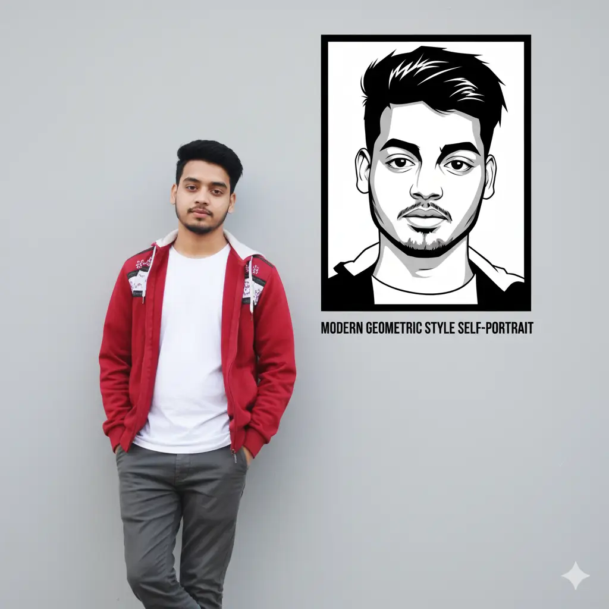

Prompt: "A stylish young man posing confidently with a sleek black Yamaha R15 bike, leaning casually with one hand on the bike. Wearing a full black outfit – jacket, t-shirt, and pants – along with white Nike sneakers. Stylish hairstyle with sunglasses and a pendant necklace. Background slightly blurred with muted tones, giving a cinematic and dramatic vibe. Soft lighting, high detail, realistic photography style, modern streetwear aesthetic."
Golden Hour Portrait
Prompt: "Ultra-realistic 4K portrait of a young Indian man, keeping the uploaded face with 100% accuracy. He is standing casually against a plain textured wall, bathed in warm golden-hour sunlight. He wears a crisp black linen shirt, slightly unbuttoned at the top, paired with tailored black trousers. His hands rest in his pockets, giving a confident yet relaxed vintage look. The background wall is illuminated with artistic window shadows, creating a cinematic and dramatic atmosphere. His hair is styled in a slightly tousled, natural way, with sunlight catching the edges. The overall aesthetic is cinematic, retro, and editorial with warm tones, subtle grain, and timeless masculine elegance."
Studio Duo Portrait
Prompt: "A studio portrait of a man sitting in a modern armchair and a woman standing behind him, leaning on the chair. The background is a plain, light grey or white. The man is wearing a black t-shirt, ripped black jeans, and light-colored sneakers, with his hand on his chin. The woman is wearing a cream-colored long-sleeved blouse and beige trousers, with long dark wavy hair. Both are looking directly at the camera with a neutral or slightly serious expression. The lighting is soft and even, typical of a professional studio setup."
Casual Sunglasses Portrait
Prompt: "A headshot of a smiling young man with dark, styled hair and a short beard, wearing sunglasses, a light grey t-shirt, and a black jacket, against a blurred grey background."
Casual Sunglasses Portrait
Prompt: "A headshot of a smiling young man with dark, styled hair and a short beard, wearing sunglasses, a light grey t-shirt, and a black jacket, against a blurred grey background."
Diwali Celebration
Prompt: "A beautiful young Indian woman in traditional festive attire, wearing a red stylish sleeveless blouse and a cream lehenga with bright red floral prints. She is sitting gracefully, holding a decorated brass thali filled with lit diyas (oil lamps) in both hands. Her head is slightly tilted, with a gentle smile and expressive eyes looking towards the camera. She has long wavy hair styled to one side, adorned with a maang tikka, earrings, and golden bangles. The background is softly blurred with traditional elements."
Collector's Figurine
Prompt: "Create a 1/7 scale commercialized figurine of the characters in the picture, in a realistic style, in a real environment. The figurine is placed on a computer desk. The figurine has a round transparent acrylic base, with no text on the base. The content on the computer screen is a 3D modeling process of this figurine. Next to the computer screen is a toy packaging box, designed in a style reminiscent of high-quality collectible figures, printed with original artwork. The packaging features two-dimensional flat illustrations."
Elegant Rose Portrait
Prompt: "ultra-realistic portrait of a young woman in an off-shoulder black outfit, holding a single red rose. She gazes slightly upward with a dreamy, thoughtful expression. Soft circular spotlight on the wall behind her creates dramatic shadows and a stylish editorial mood. Ultra HD, sharp details, cinematic fashion photography aesthetic. Aspect ratio: 9:16 (vertical)."
Traditional Elegance
Prompt: "A portrait of me wearing a traditional white hijab with golden and lace embroidery along the borders, styled neatly around the head and shoulders. I am smiling softly, with natural makeup, red lipstick, and bright eyes. I am wearing an elegant gold necklace with a large turquoise green gemstone pendant. Background is filled with red roses and green leaves, softly blurred to highlight me. High-resolution, realistic, vibrant, professional photography style."
Urban Style Portrait
Prompt: "A rugged, stylish man with the face from the uploaded image, keeping the facial features exactly the same, and voluminous wavy hair styled back, wearing round dark sunglasses and a white open-collar shirt. He has a prominent black scorpion tattoo on the left side of his neck and wears layered black chains around his neck. The lighting is soft and warm, highlighting his side profile with a serious expression. The background is an indoor setting with blurred wooden wardrobe doors, creating a casual, intimate atmosphere."
Modern Couple Portrait
Prompt: "A studio portrait of a young man and woman. The man is seated in a light-colored armchair, wearing a black t-shirt and ripped black jeans, with light-colored sneakers. He has dark hair and a beard, and is looking slightly to his right with his hand resting on his temple. The woman is seated on the floor in front of and to the right of the man, wearing a ribbed cream-colored top and light beige trousers. She has long, dark, wavy hair and is looking intently to her right. The background is a plain white or light grey. The lighting is soft and even, highlighting both subjects clearly."
Mountain Adventure
Prompt: "Ultra realistic, 8K resolution cinematic image of a person crouching beside a powerful black horse in a snow-covered mountainous landscape. Face with the face from the uploaded image, keeping the facial features exactly the same. wavy hair, and wears dark sunglasses, a cozy black sweater, grey cargo pants, and black boots. He crouches with one knee bent, holding the reins of the horse with a relaxed yet confident posture. The horse is muscular, with a glossy jet-black coat, flowing mane, and expressive eyes, wearing a simple leather halter. Snow blankets the ground with footprints and scattered rocks visible. In the background, soft-focus snow-covered hills, pine trees, and distant mountain peaks stretch under a clear blue sky. Snowflakes gently fall around them, adding depth and softness to the scene. The lighting is soft and natural, highlighting details like the texture of the snow, fabric folds, and hair strands. The overall mood is calm, adventurous, and majestic, evoking a sense of freedom and harmony with nature."
Red Royalty
Prompt: "A stylish young man wearing sunglasses, a patterned red shirt, and red pants, sitting confidently in a red armchair. The background is solid red, and the name "SUFIYAN" is written in bold, red capital letters at the top."
Luxury Fashion
Prompt: "Close-up shot of a handsome young man that resembles my uploaded photo, fashion model wearing a soft and luxurious fur coat, hair exactly like in my uploaded photo, standing in a fashion-forward pose. Two lions seated on both sides, elegant muted backdrop with a luxury fashion magazine look, rich textures, beautiful subtle shadow play, cinematic lighting, Vogue-inspired styling, masterpiece-level detail. -ar 2:3 -v 6-s 750-q 2.5-c 15."
Urban Style
Prompt: "Create a photo of me posing against a dark, urban background with stone and brick elements, similar to the provided image. I should be leaning against a low stone wall or structure, looking towards the camera side with a confidence. I should be wearing a black loose Shirt, black cargos, and black and white colour shoes. The lighting should be natural and slightly diffused, giving a moody yet clear feel. The overall style should be sophisticated and modern. left hand touching the hair."
Outdoor Photographer
Prompt: "A young person standing confidently outdoors on a large tree trunk, holding a professional DSLR camera in one hand. Wearing a stylish black outfit: loose half-sleeve black t-shirt with a design on the chest, slim-fit black pants, and black sneakers with white soles. Hairstyle is voluminous and neatly styled. The background is softly blurred with green and white tones, creating a bokeh effect. The photo has a smooth, edited, high-definition look, with slightly enhanced colors and a polished, fashion-style portrait effect."
90s Movie Scene
Prompt: "Create a retro vintage grainy but bright image of the reference picture but draped in a perfect red wine color Pinteresty aesthetic retro shirt with white pant and holding a white rose flower in hands. It must feel like a 90s movie and romanticising windy environment. The boy is standing against a solid wall deep shadows and contrast drama creating a mysterious and artistic atmosphere where the lighting is warm with a golden tones of evoking a sunset or golden hour glow. The background is minimalist and slightly textured the expression on her face is moody, calm yet happy and introspective.image size 4:5"
Vintage Editorial
Prompt: "Ultra-realistic 4K portrait of a young Indian man, keeping the uploaded face with 100% accuracy. He is standing casually against a plain textured wall, bathed in soft golden-hour sunlight that creates dramatic warm shadows. He wears a crisp white linen shirt, slightly unbuttoned at the top, paired with high-waisted cream trousers. His hands rest in his pockets, giving a relaxed yet confident retro look. His hair is styled in a tousled, natural way, with sunlight catching the edges. The aesthetic is cinematic, vintage, and editorial, with warm tones, soft grain, and timeless masculine elegance."
Pencil Sketch Art
Prompt: "Create a realistic black and white pencil sketch of a man with a beard and voluminous hair, similar in style to the provided image. He should be smiling slightly, looking directly forward. Include a pencil in the foreground, angled similarly to the example. The sketch should have a signature on the bottom right."

Modern Wall Art
Prompt: "Wearing the same outfit. He leans casually against a light-gray wall, hands in pockets, one leg crossed. On the wall, add a bold black-and-white vector portrait of him with modern geometric style. Below it, write."
Collector's Scene
Prompt: "A hyper-realistic scene featuring a 1/5 scale commercialized figurine of the man from the uploaded photo. The figurine is realistic, posed standing on a round transparent acrylic base, placed on a computer desk. Next to the desk is the real-life version of the same man wearing the same attire as in the reference photo, cleaning the figurine carefully with a fine brush. The environment is a modern styled studio room, brightly lit, with shelves in the background holding a collection of toys."
Social Media Ready
Prompt: "Create an edited portrait of a young man wearing a stylish maroon blazer and a cream shirt, with fashionable hair and a soft, professional background. Enhance the colors for a vibrant look, and add subtle text overlays near the bottom: 'PROFACT BEAUTI - Innocent look Boy'. Maintain a modern, social-media-ready aesthetic."
About Gemini Prompt
Welcome to Gemini Prompt, your ultimate destination for exploring the creative possibilities of AI image generation. Our platform showcases stunning visuals created using Gemini AI, along with the exact prompts that brought them to life.
We believe that understanding how to craft effective prompts is key to unlocking the full potential of AI art. That's why we provide detailed examples and insights to help you create your own amazing images.
Whether you're an artist, designer, or simply curious about AI creativity, our gallery offers inspiration and practical guidance for your own AI art journey.